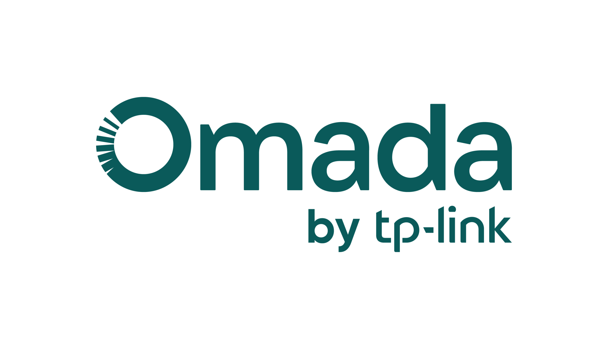
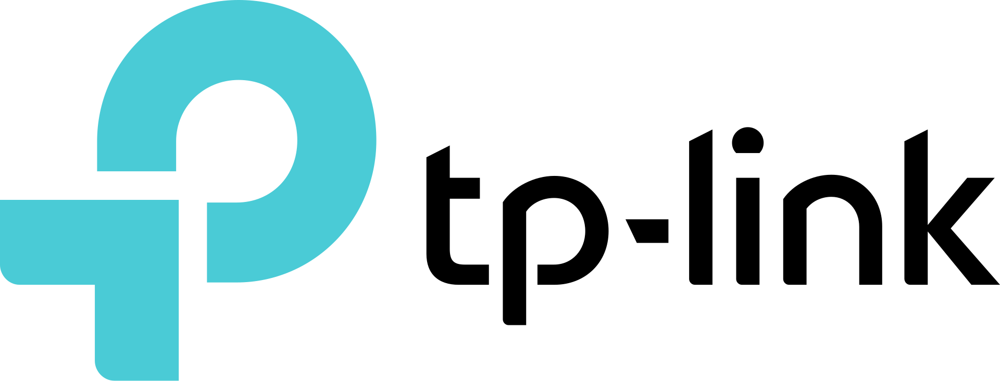

01
Internet e Wi-Fi
Ajuda com internet lenta ou sem conexão, sinal fraco, roteadores e cobertura Wi-Fi em casa.
SUPORTE TÉCNICO / ARACAJU, SE
.jpg)
PROBLEMAS DO DIA A DIA
Conte o que está acontecendo. A gente avalia o caso e combina o escopo e a disponibilidade antes do atendimento.
Ajuda com internet lenta ou sem conexão, sinal fraco, roteadores e cobertura Wi-Fi em casa.
Orientação para conexão, configuração e problemas comuns de uso. Reparos de hardware são avaliados antes de definir o serviço.
Configuração da rede Wi-Fi e diagnóstico de falhas de conexão da Smart TV. Senhas e contas pessoais ficam sob seu controle.
Configuração de roteadores, dispositivos conectados e rede cabeada para organizar a conexão em casa.
REDES PARA EMPRESAS
Avaliação de ambiente e requisitos para definir o escopo técnico adequado a cada empresa.
Planejamento de roteamento, firewall e balanceamento de múltiplos links, incluindo cenários PCC quando adequados à arquitetura.
Organização de redes cabeadas e Wi-Fi, segmentação e conectividade adequada à rotina e ao crescimento da empresa.
Ambientes Linux, serviços de rede e infraestrutura baseada em Debian ou Fedora conforme os requisitos e o ambiente existente.
Revisão de regras de firewall, segmentação de rede e medidas de continuidade compatíveis com o ambiente e os requisitos do negócio.
As mudanças de infraestrutura dependem de acesso autorizado, inventário técnico e janela de manutenção. Não são publicados dados de rede, usuários ou configurações confidenciais.
TECNOLOGIAS E FABRICANTES
Experiência com diferentes fabricantes e plataformas para redes, conectividade e servidores.


Os logotipos identificam tecnologias e fabricantes; sua exibição não implica parceria ou endosso.
ATENDIMENTO EM ARACAJU E SERGIPE
Compartilhe o contexto geral da rede — sem enviar senhas ou informações confidenciais no primeiro contato.